Table Index
Each entry links to the full page image because this OCR PDF stores pages as scanned images.
Table 1 - page 011
{kind=link}
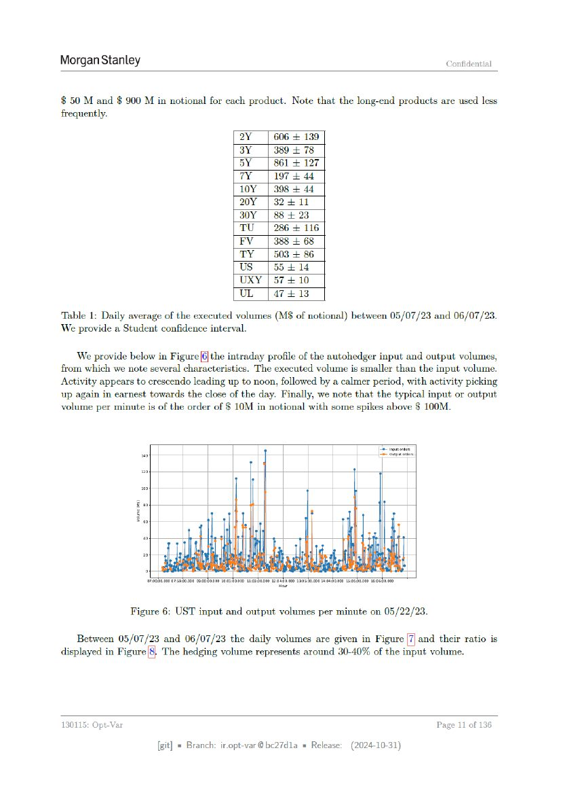
Table 1: Daily average of the executed volumes (M$ of notional) between 05/07/23 and 06/07/23.
Table 2 - page 042
{kind=link}
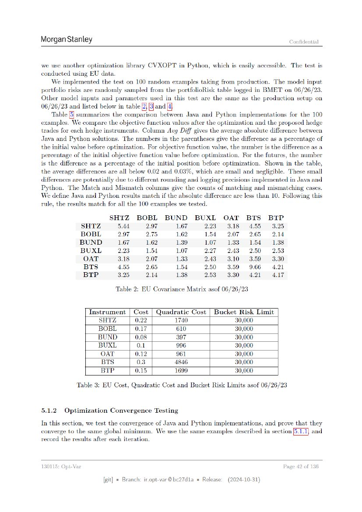
Table 2: EU Covariance Matrix asof 06/26/23
Table 3 - page 042
Table 3: EU Cost, Quadratic Cost and Bucket Risk Limits asof 06/26/23
Table 4 - page 043
{kind=link}
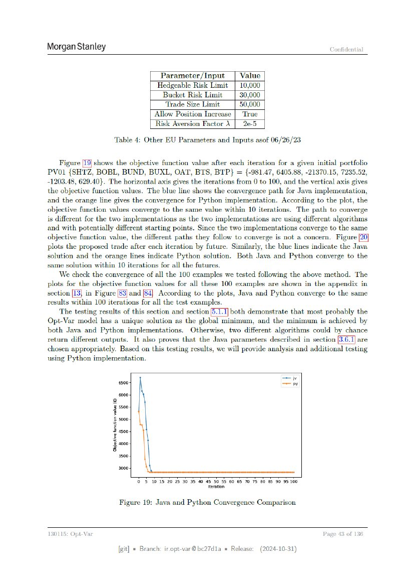
Table 4: Other EU Parameters and Inputs asof 06/26/23
Table 5 - page 044
{kind=link}
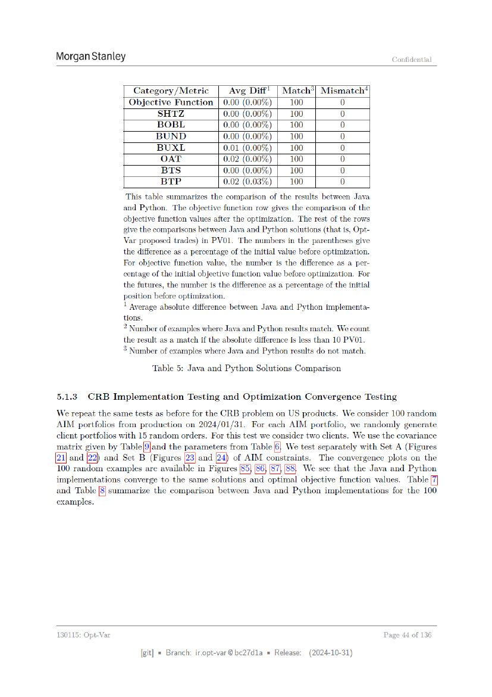
Table 5: Java and Python Solutions Comparison
Table 6 - page 045
{kind=link}
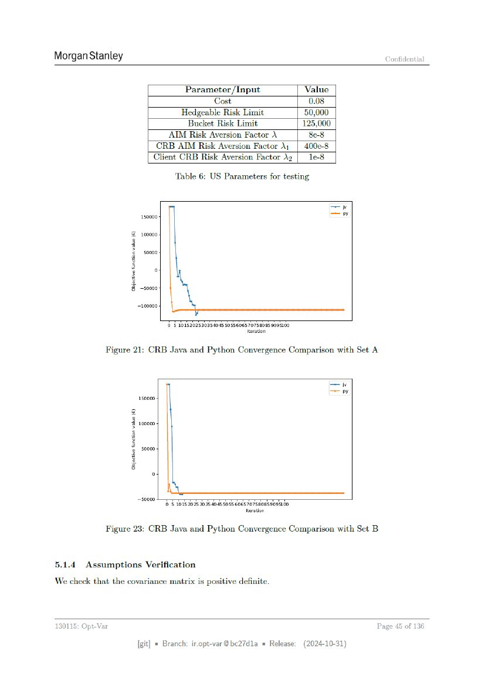
Table 6: US Parameters for testing
Table 7 - page 048
{kind=link}
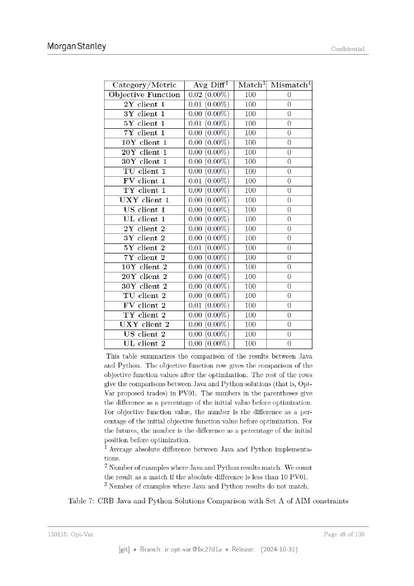
Table 7: CRB Java and Python Solutions Comparison with Set A of AIM constraints
Table 8 - page 049
{kind=link}
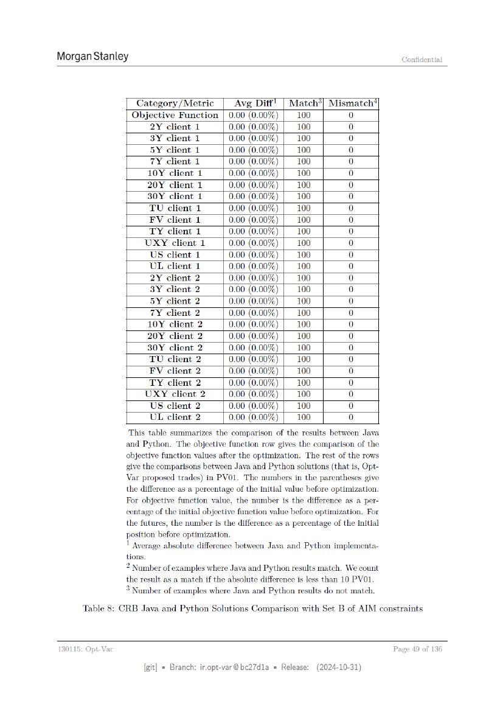
Table 8: CRB Java and Python Solutions Comparison with Set B of AIM constraints
Table 11 - page 058
{kind=link}
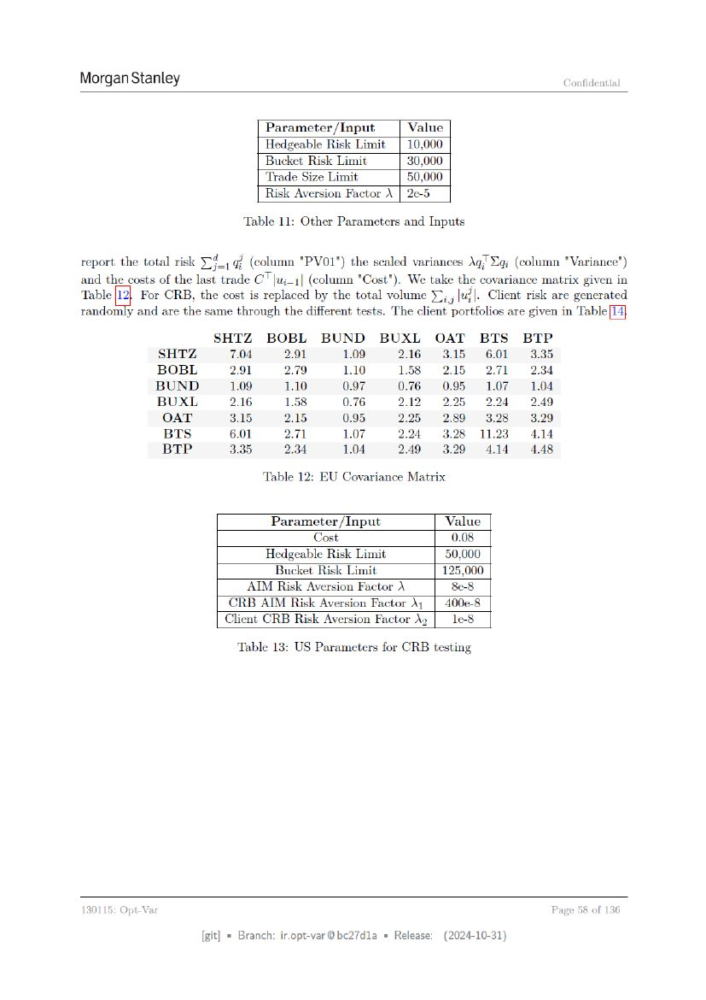
Table 11: Other Parameters and Inputs
Table 12 - page 058
Table 12: EU Covariance Matrix
Table 13 - page 058
Table 13: US Parameters for CRB testing
Table 15 - page 060
{kind=link}
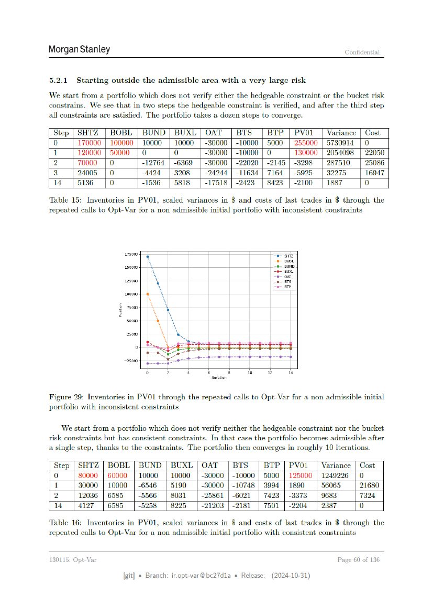
Table 15: Inventories in PVO1, scaled variances in $ and costs of last trades in $ through the repeated calls to Opt-Var for a non admissible initial portfolio with inconsistent constraints
Table 16 - page 060
Table 16: Inventories in PVO1, scaled variances in $ and costs of last trades in $ through the repeated calls to Opt-Var for a non admissible initial portfolio with consistent constraints
Table 19 - page 063
{kind=link}
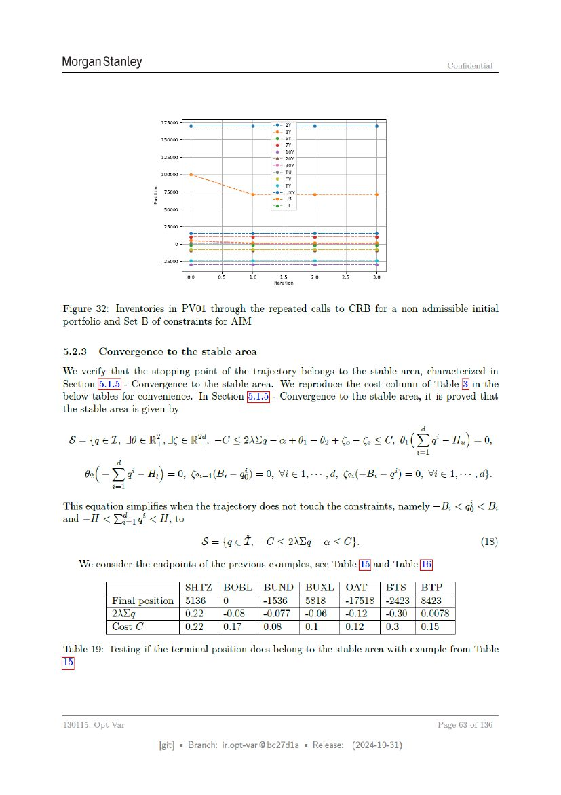
Table 19: Testing if the terminal position does belong to the stable area with example from Table
Table 20 - page 064
{kind=link}
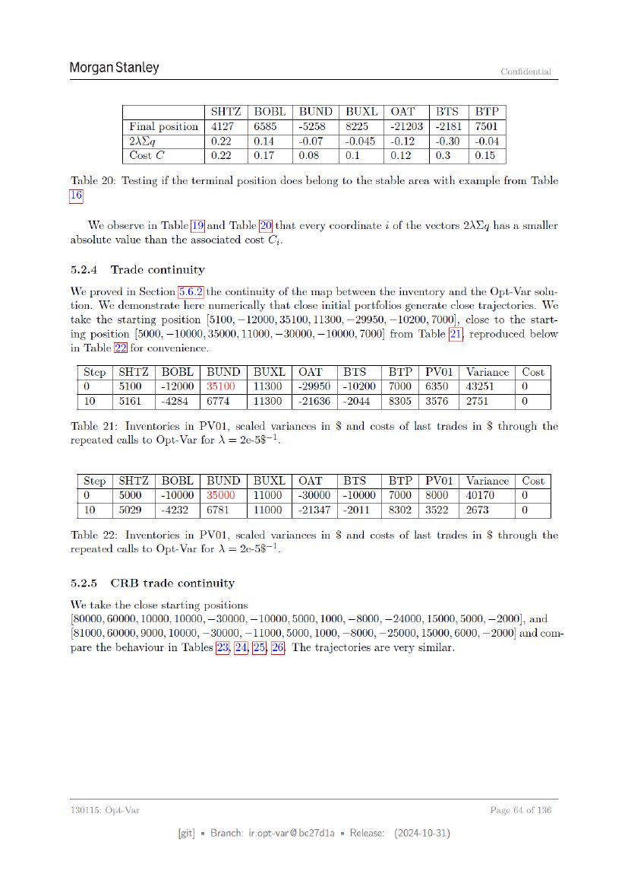
Table 20: Testing if the terminal position does belong to the stable area with example from Table
Table 21 - page 064
Table 21: Inventories in PVO1, scaled variances in $ and costs of last trades in $ through the repeated calls to Opt-Var for \ = 2e-58-1,
Table 22 - page 064
Table 22: Inventories in PV01, scaled variances in $ and costs of last trades in $ through the repeated calls to Opt-Var for \ = 2e-5$-1.
Table 27 - page 066
{kind=link}
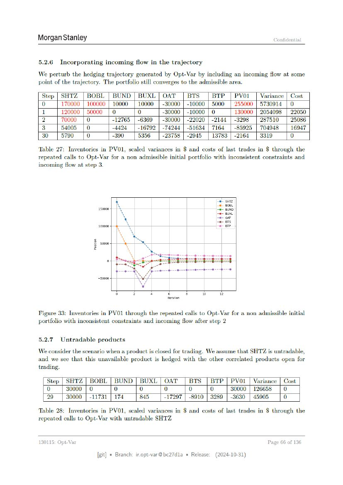
Table 27: Inventories in PV01, scaled variances in $ and costs of last trades in $ through the repeated calls to Opt-Var for a non admissible initial portfolio with inconsistent constraints and incoming flow at step 3.
Table 28 - page 066
Table 28: Inventories in PV01, scaled variances in $ and costs of last trades in $ through the repeated calls to Opt-Var with untradable SHTZ
Table 29 - page 068
{kind=link}
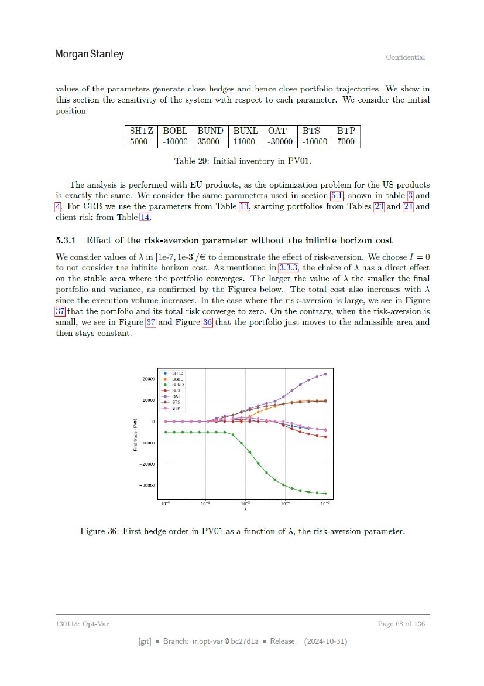
Table 29: Initial inventory in PVO1.
Table 30 - page 090
{kind=link}
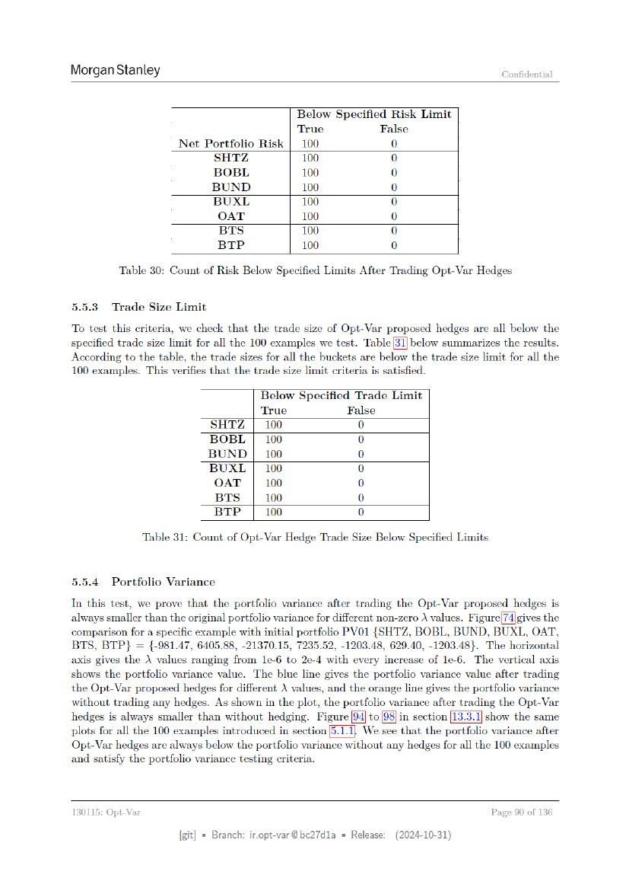
Table 30: Count of Risk Below Specified Limits After Trading Opt-Var Hedges
Table 31 - page 090
Table 31: Count of Opt-Var Hedge Trade Size Below Specified Limits